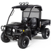
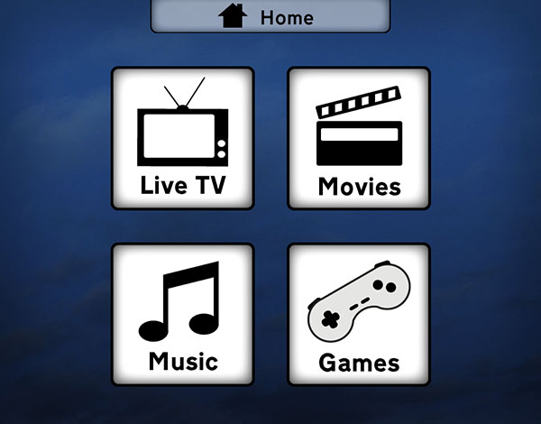
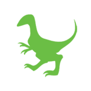

Who?
My name is Nikki. I'm a Designer, Engineer, occasional artist, and all sorts of things in between. I was a member of the fifth graduating class ever at Olin College and am now a Master's student at the University of Washington. In my spare time I'm a trustee of the Seattle Awesome Foundation.
I can (and will) talk at length about education, honor codes, and human nature if left unchecked. I care about how people interact with technology, and how technology interacts with the world around it.
Resume
Feel free to download my resume and my portfolio.
Projects
Projects make the world go round! Here are some that I've worked on (links with » are external).Arrived. »
Advanced Interaction Design, Winter 2012
Arrived. was designed for the Microsoft Expo 2012 challenge "Information in My World". We developed a device agnostic system that combines mapping systems, events, and contacts to help users get where they are going with minimal stress. Real-time information and smart predictions are used to dynamically generate routes and handle delays, to let users get where they want, when they want, how they want.
Olin-Draper AGV »
Senior Capstone Program in Engineering, 2009-2010
The Olin-Drapor AGV was an Olin College SCOPE project to design and build an offroad robotics research platform for Draper Laboratory. We built the base hardware platform and developed proof of concept autonomous behaviors. The final goal was to autonomously follow GPS waypoints with half meter accuracy while preventing collisions.
Home Entertainment Systems »
Human Factors & Interface Design, Spring 2009
This home entertainment system redesign was done for Olin College's Human Factors and Interface Design course in the Spring of 2009. The focus of the project was on simplifying experience of using a home entertainment system, driving strongly towards a goal-centric interface instead of the current task-centric interaction.
Mamalode »
User-Centered Design, Fall 2011
Mamalode is a print magazine focused on supporting and networking current and expecting mothers. The goal of this project was to help Mamalode explore digital content distribution, in the form of an iPad magazine application. The final deliverable was a design specification/user research report and an interactive prototype (constructed with HTML, CSS, and javascript).
Gatehopper
Independent Mobile Web Design, Spring 2010
Gatehopper is a lightweight mobile web application that connects and entertains travelers flying between destinations. A user can "check-in" to their flight using the application to view other individuals on the flight and their discussions on the flight wall. Through participation users can earn badges and levels demonstrating how much they have traveled.
One Velociraptor Per Child »
Independent Web Design, Fall 2008
Most of the nearly two billion children in the developing world have inadequate access to dinosaurs. Some receive no paleontology training at all. One in three has never even seen a dinosaur in person. The One Velociraptor Per Child project set out to fix this dire situation. (OVPC was a collaboration with the esteemed Greg Marra)